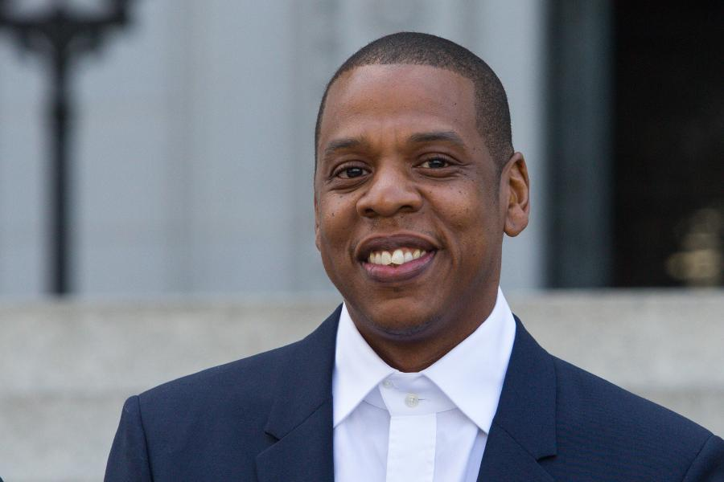

In the few hours spent at the family’s cozy, white clapboard house, situated off a main artery in suburban Oshawa, Ontario, she hands us jars filled with things to taste and smell. “You guys have to take care of your bodies,” she cautions.
Once she leaves for work, Daniel—who was born Ashton Simmonds—tells me that they don’t talk about his music very much. We’re in a white-walled family room, sitting on a couch that’s wedged between an electronic organ and the small desk Daniel once used to do school work. After rooting around, the 21-year-old singer finds one of his father’s gospel albums, Can You Feel His Love? Later, on the drive back to Toronto, we’ll pop in the CD and listen to a duet called “Give Me Jesus” that Daniel recorded with his dad, Norville, at 16. He sounds the same, just younger, and a little less sturdy next to his father. “He’ll always be more fire than me,” Daniel says, laughing.
While Toronto’s become known for a variant Auto-Tuned form of R&B, Daniel is, unintentionally, pushing back with a stripped-down approach to soul that’s all voice. It’s potent and velvet, honed over years singing with his family at church. You can hear this practiced talent and the heady influence of gospel on his debut EP, 2014’s Praise Break, as well as last year’s Pilgrim’s Paradise EP (he’s released three EPs in total).
“The first song I ever wrote was in grade eight,” Daniel says. “There was this girl named Bethany that I had a crush on and I wrote this song called ‘Shy That Way.’ Living out here in Oshawa, everyone was listening to John Mayer, Jason Mraz, that acoustic guitar stuff, so that’s what it sounded like.” At home, parental advisory-stickered albums were considered contraband. “We had some Stevie Wonder and Luther Vandross, but there’s a lot of hip-hop and other black music that I just never grew up on. My parents didn’t listen to anything other than black gospel. There’s no pop culture in here really.” Raised Seventh Day Adventist, Daniel attended a private Christian high school on the campus of his church. His is one of the handful of black families that live in this clustered, mainly white community, which includes a religious bookstore, a ladder factory, a greenhouse, and multiple schools. As a teen, he and his classmates would work in the lumber yard every morning before class. Daniel doesn’t have fond memories of the experience but as we walk around the neighborhood, stepping over puddles and piles of sawdust, he seems comfortable. “I don’t love where I’m from, but I can’t run away from the fact that I’m from here, you know?” he says.When Daniel was 17, he left home after a falling out with his father the weekend of his high school graduation. “It was an amalgamation of things,” he explains. There was a minor weed scandal a year prior— “My parents told the school and I got kicked out. It was a bunch of Christians worrying about a couple of grams”— after which he was homeschooled for a time. “They weren’t going to let me go to the parties during grad week—they didn’t want me to do anything bad before school ended—and my dad had told me to clean up my room and I didn’t. So I came home one day and all my shit was in garbage bags. I was just fed up, so we had a talk and I left.” After spending the summer at a friend’s house in the suburbs, Daniel found a job as a dishwasher at an upscale restaurant in downtown Toronto. For a while he couch surfed, and some nights after work, when friends weren't home to open their doors, he’d sleep on park benches.....
Music Video for Daniel Ceasar's single - Violet
| Photo of Artist | Artist Name | Net Worth |
|---|---|---|
| Sean "Diddy" Combs | $735 million | |
|
Andre Romelle "Dr.Dre" Young | $700 million |
|  | Shawn "Jay-Z" Carter | $550 million |